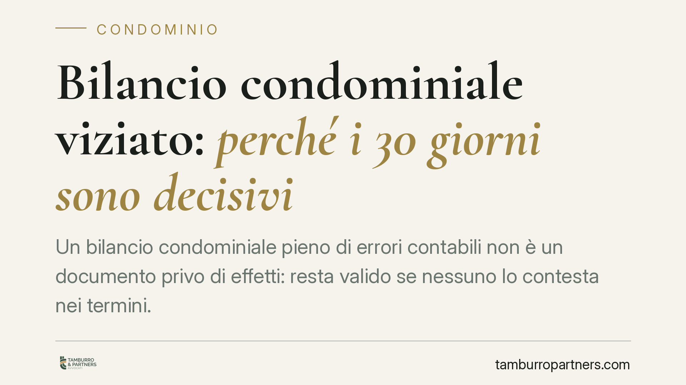

Bilancio condominiale viziato: perché i 30 giorni sono decisivi
Un bilancio condominiale pieno di errori contabili non è un documento privo di effetti: resta valido se nessuno lo contesta nei termini. La distinzione tra delibera annullabile e nulla cambia tutto, perché per l'annullabilità la legge fissa un termine di decadenza di trenta giorni. Chi lascia scadere quel termine si ritrova con conti definitivi, anche se sbagliati.

Il caso e la questione
Una recente pronuncia di merito è tornata sul tema del bilancio condominiale approvato nonostante errori contabili. La conclusione è in linea con l'orientamento consolidato: la delibera che approva un rendiconto viziato da errori di calcolo o imputazione è annullabile, non nulla.
La differenza non è nominalistica. Dalla qualificazione discende il regime di impugnazione e, soprattutto, il termine entro cui agire.
*(Gli estremi della pronuncia citata nella rassegna di stampa riportano una datazione che richiede verifica presso le fonti ufficiali; per questo la trattiamo come indicazione di tendenza e non come precedente da richiamare in giudizio.)*
Inquadramento normativo
L'art. 1137 del Codice civile disciplina l'impugnazione delle delibere assembleari. Il condomino assente, dissenziente o astenuto può rivolgersi all'autorità giudiziaria entro trenta giorni. Per chi era assente il termine decorre dalla comunicazione del verbale; per chi era presente e ha votato contro o si è astenuto, dalla data della delibera.
Si tratta di un termine di decadenza: scaduto, la delibera diventa inoppugnabile e i conti si consolidano, errori compresi.
Il contenuto del rendiconto è fissato dall'art. 1130 bis c.c., che richiede registro di contabilità, riepilogo finanziario e nota sintetica esplicativa. Un rendiconto incompleto o inesatto, però, non diventa per ciò solo nullo: resta nell'area dell'annullabilità, salvo vizi più radicali.
Il confine tra annullabilità e nullità
Qui sta il punto che richiede attenzione. Le Sezioni Unite della Cassazione (sent. n. 4806/2005) hanno tracciato la linea di demarcazione tra delibere nulle e annullabili.
Sono annullabili — e quindi soggette ai trenta giorni — le delibere affette da vizi relativi alla regolare costituzione dell'assemblea, da violazioni di legge o di regolamento che incidono sul procedimento, da errori nei conteggi: in sostanza, gli errori contabili tipici di un bilancio mal redatto.
Sono invece nulle — impugnabili senza limiti di tempo e da chiunque vi abbia interesse — le delibere prive degli elementi essenziali, con oggetto impossibile o illecito, o che ledono diritti individuali del singolo condomino. Rientra in quest'area, secondo parte della giurisprudenza, la delibera che modifica i criteri legali o convenzionali di riparto delle spese incidendo stabilmente sulle quote, perché tocca un diritto che l'assemblea a maggioranza non può comprimere.
La conseguenza pratica è netta: un errore di somma è annullabile (trenta giorni); l'adozione di un criterio di riparto diverso da quello legale o tabellare può configurare nullità (nessun termine). Prima di decidere se e come agire, occorre qualificare correttamente il vizio.
Implicazioni pratiche
Per il condomino, il messaggio è semplice: davanti a un bilancio che non torna non si può aspettare. Trenta giorni passano in fretta, e il termine va coordinato con un ulteriore passaggio.
In materia condominiale la mediazione è obbligatoria come condizione di procedibilità (art. 5 D.Lgs. 28/2010). La domanda di mediazione, se proposta nel termine, produce effetti sulla decadenza: è quindi essenziale attivarsi tempestivamente anche sul fronte conciliativo, senza confidare nel fatto che la mediazione "congeli" automaticamente un termine già scaduto.
Resta aperta, sul piano degli orientamenti, la questione della responsabilità dell'amministratore che redige il rendiconto. L'art. 1218 c.c. inquadra la responsabilità contrattuale da inadempimento, ma la giurisprudenza di merito non è uniforme sulla portata e sulle conseguenze: materia da valutare caso per caso, anche in rapporto all'eventuale danno concreto subito dal condominio.
Cosa fare in concreto
- Verifica subito la data di decorrenza. Individua se eri assente, dissenziente o astenuto e calcola i trenta giorni dalla comunicazione del verbale o dalla delibera.
- Qualifica il vizio. Distingui l'errore contabile (annullabile) dalla violazione dei criteri legali di riparto o dalla lesione di un diritto individuale (potenziale nullità).
- Richiedi e conserva la documentazione. Pretendi dall'amministratore registro di contabilità, riepilogo finanziario e nota esplicativa ex art. 1130 bis c.c.
- Attiva la mediazione nei termini. Non trascurare la condizione di procedibilità: depositala tempestivamente per non pregiudicare l'azione.
- Fatti assistere prima di agire. La scelta tra impugnazione per annullabilità e azione di nullità dipende dalla corretta qualificazione del vizio e condiziona l'intera strategia.
Disclaimer
Contributo informativo a cura di Tamburro & Partners - Avv. Giuseppe Tamburro. Non costituisce parere legale.
Ogni condominio ha una storia a sé.
Se gestisci un'amministrazione e vuoi un confronto su una specifica questione condominiale, scrivi allo studio. Ti rispondiamo entro un giorno lavorativo.